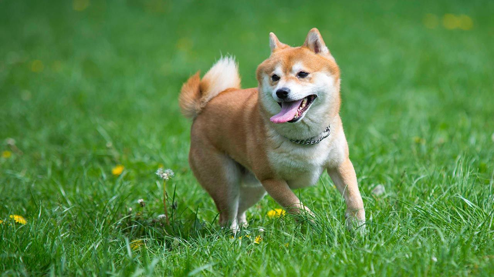
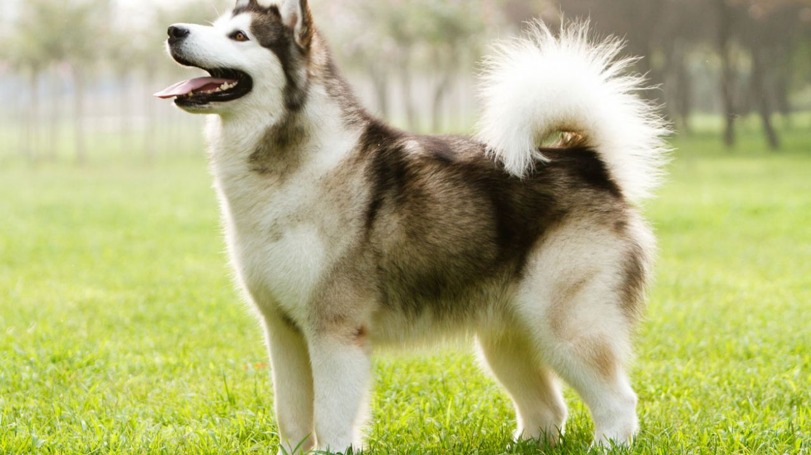
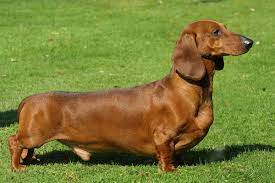

Razas de perros
Si eres amante de los perros, no te puedes perder las características, curiosidades y cuidados de todas las razas de perros. Desde perros pequeños hasta perros medianos o perros grandes.
Descubre cuál es la raza de perro más inteligente, la historia de cada tipo de perro, las curiosidades y necesidades... todo lo que debes saber para entender mejor a tu perro y darle lo que necesita.

| Nombre | Shiba Inu |
|---|---|
| Peso | Macho: 10 kg Hembra: 8 kg |
| Altura | Macho: 35–43 cm Hembra: 33–41 cm |
| Esperanza de Vida |
De 12 a 15 años |
| Tempera- mento |
Simpático Entusiasta Alerta Intrépido Confiado Fiel |
| Colores | Rojo sésamo Crema Negro y canela Sésamo negro Sésamo, Rojo |
| Origen | Japón |

| Nombre | Akita Inu |
|---|---|
| Peso | Macho: 45–59 kg Hembra: 32–45 kg |
| Altura | Macho: 64–71 cm Hembra: 58–66 cm |
| Esperanza de Vida |
De 10 a 14 años |
| Tempera- mento |
Fiel Impasible Obstinado Inteligente Receptivo Leal Valiente |
| Colores | Blanco Pelaje atigrado Sésamo Rojo cervato |
| Origen | Japón |

| Nombre | Siberian Husky |
|---|---|
| Peso | Macho: 20-27 kg Hembra: 16-23 kg |
| Altura | Macho: 53–60 cm Hembra: 51–56 cm |
| Esperanza de Vida |
De 12 a 15 años |
| Tempera- mento |
Extrovertido Amigable Inteligente Alerta Gentil |
| Colores | Blanco Negro Negro y canela Gris con blanco Gris plateado Sable y blanco Negro y blanco Rojo y blanco Gris |
| Origen | Siberia |

| Nombre | Ladrador Retriever |
|---|---|
| Peso | Macho: 29–36 kg Hembra: 25–32 kg |
| Altura | Macho: 57-62 cm Hembra: 55-60 cm |
| Esperanza de Vida |
De 10 a 12 años |
| Tempera- mento |
Extrovertido Apacible Inteligente Amable Ágil Confiado Gentil |
| Colores | Negro Chocolate Amarillo |
| Origen | Isla de Terranova |

| Nombre | Golden Retriever |
|---|---|
| Peso | Macho: 30–34 kg Hembra: 25–32 kg |
| Altura | Macho: 56–61 cm Hembra: 51–56 cm |
| Esperanza de Vida |
De 10 a 12 años |
| Tempera- mento |
Amigable Inteligente Confiable Amable Confiado |
| Colores | Oro oscuro Crema Dorado claro Dorado |
| Origen | Escocia Reino Unido Inglaterra |

| Nombre | Coker Spaniel |
|---|---|
| Peso | Macho: 13–16 kg Hembra: 12–15 kg |
| Altura | Macho: 38–43 cm Hembra: 36–41 cm |
| Esperanza de Vida |
De 12 a 15 años |
| Tempera- mento |
Juguetón Amigable Cariñoso Callado Entrenable Fiel |
| Colores | Negro Azul ruano Naranja ruano Negro y canela |
| Origen | Reino Unido Inglaterra |

| Nombre | Dachshund |
|---|---|
| Peso | Macho: 16-32 lb Hembra: 14-30 lb |
| Altura | Macho: 20-23 cm Hembra: 18-22 cm |
| Esperanza de Vida |
De 12 a 16 años |
| Tempera- mento |
Listo Obstinado Devoto Vivaz Independiente Activo Juguetón Valiente |
| Colores | Negro Chocolate y rojizo Negro y canela Chocolate y crema Azul y fuego Crema Canela Rojo |
| Origen | Alemania |